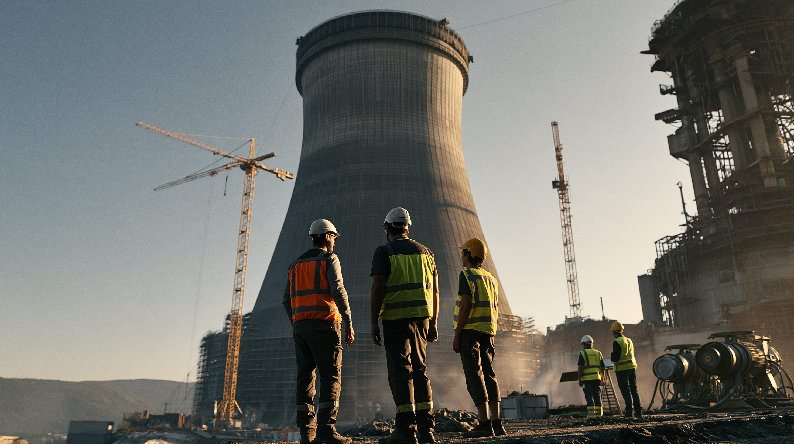
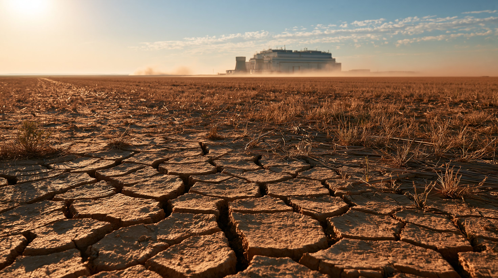
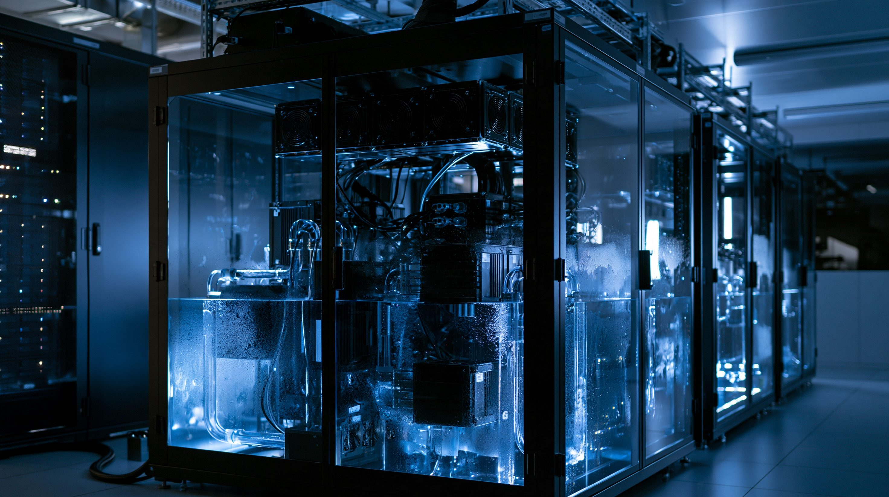

01論点 — 一言の質問が、なぜ電気と水を使うのか
ChatGPTやGeminiに「今日の天気は?」と一言送るだけでも、その裏では実際に電気と水が動いている。送ったメッセージはインターネットを通じて「データセンター」と呼ばれる巨大な施設に届き、そこに並ぶ数万台のコンピューター（サーバー）が計算して答えを作る。
この計算を担うのは、GPU(ジーピーユー)と呼ばれる特殊な半導体チップだ。GPUは計算中に大量の熱を出す。GPUを積んだサーバーの棚(ラック)1台分の消費電力は10〜30キロワットにのぼり、一般的なサーバーラック(3〜5キロワット)の2〜6倍にあたる。この熱を逃がすために、電気で動く冷房と、水を循環させる冷却設備の両方が使われる。「AIが電力と水を使う」というのは、この「計算(電気)」と「冷却(水)」が同時に起きているということだ。
スマホから送るたった一言の質問に、電気と水はどれくらい使われているのか。そして、それが世界中で積み重なると、どれほどの規模になるのか。
02タイムライン — 表面化した「AIの水とエネルギー」問題
AIが使う電力・水の規模が表に出てきたのは、ここ数年のことだ。学習にかかった水の推計、企業自身による開示、電力を確保するための原発再稼働——主な出来事を追う。
Microsoftのアイオワ州データセンターは、大規模モデルの学習が最盛期を迎えた2022年7月に1,150万ガロン、8月に1,340万ガロン(約5,070万リットル)の水を消費した。8月分は、地元の水道区が供給する水全体の6%に相当する量だったとされる。
カリフォルニア大学リバーサイド校とテキサス大学アーリントン校の研究チームが、GPT-3の学習だけでMicrosoftの米国データセンターが約70万リットルの淡水を直接蒸発させたとする推計を論文で発表した。
Amazonは、ペンシルベニア州のサスケハナ原子力発電所に隣接するデータセンターキャンパスを買収した。発電所から直接電力を得られる立地を確保する動きの一つ。
イーロン・マスク率いるxAIが、テネシー州メンフィスの旧工場跡地でスーパーコンピューター「Colossus」の運用を始めた。稼働にあたり最大35基のガスタービン発電機を許可なく稼働させていたことが後に問題視され、大気汚染を規制するアメリカの法律「大気浄化法」をめぐる訴訟に発展した。
Microsoftは電力会社コンステレーション・エナジーと、停止していたスリーマイル島原発(2号機)を再稼働させ、20年間にわたり発電量の100%を買い取る契約を結んだ。再稼働は当初2028年を見込んでいたが、送電網接続の早期承認を受け、2027年末までの前倒しを目指す計画に変わっている。
Googleは新興の原子力企業Kairos Powerと、小型モジュール炉(SMR)6〜7基・出力500メガワット分の電力購入で合意した。企業によるSMR調達としては初めての事例とされ、最初の1基は2030年の稼働を見込む。
サム・アルトマンCEOはブログで、平均的なChatGPTへの質問1回が消費する電力は約0.34ワット時、水は約0.3ミリリットル(ティースプーンの15分の1ほど)だとする数値を公表した。ただし、どの範囲の処理を含む数値か、学習にかかった分が含まれるかは明示されていない。
アイオワ州シーダーラピッズのデータセンター用地で、許可を取得していない井戸が40本見つかった。リン郡は運営会社に2万ドルの罰金を求めた。
Googleが公表した2026年版環境報告書によると、同社データセンター全体の2025年の水消費量は109億ガロン(約413億リットル)で、前年から34%増加した。同じ年、国際エネルギー機関(IEA)は世界のデータセンター電力消費が2024年の415TWhから2030年には945TWhへほぼ倍増すると予測した。
全米黒人地位向上協会(NAACP)は、xAIとその子会社が無許可のガスタービン発電機(提訴時点で27基、その後33基に増設)を稼働させ続けているとして、ミシシッピ州の連邦地方裁判所に提訴した。周辺住民の健康への影響を理由に、操業差し止めの緊急命令も求めている。

035つの視点 — 誰が、何を主張しているか
AIの電力・水消費をめぐっては、それを推進する側、検証する側、影響を受ける側、供給する側がそれぞれ違う立場に立っている。5つの立場を並べる。
| 立場 | 基本スタンス | 主な主張 | 最大の関心事 |
|---|---|---|---|
| AI企業（Google・Microsoft） | 効率化を強調 | 水使用効率を大幅改善、水ポジティブ目標 | 効率改善と拡張の両立 |
| 独立研究者 | 開示の不透明さを指摘 | 測定範囲の違いで数値が10倍以上変動 | 測定手法の標準化・全体開示 |
| 干ばつ地域の住民・自治体 | 生活用水との競合を懸念 | 取水計画への抗議、無許可井戸の発覚 | 生活・農業用水の確保 |
| 電力・原子力産業 | 新たな大口顧客として歓迎 | 原発再稼働・SMR投資が加速 | 長期契約による収益安定化 |
| 規制が整う前に拡大するAI企業 | 規制の前で先に動く | 無許可のガスタービン稼働と訴訟 | 電力確保のスピード優先 |

04データ・統計 — 電力と水、それぞれの伸び
世界のデータセンター電力消費（TWh）
世界のデータセンター電力消費は2024年の415TWhから、2030年には945TWhへほぼ倍増する見通し。2024年時点の国別シェアは米国45%・中国25%・欧州15%。出典：IEA「Energy and AI」
Googleのデータセンター 年間水消費量（億ガロン）
Googleのデータセンター全体の水消費量は、2021年の43億ガロンから2025年には109億ガロン(前年比+34%)まで増加した。1ガロン=約3.785リットルで換算すると、2025年分はおよそ413億リットルにあたる。出典：Google 2026年環境報告書
05深掘り — 数字の裏にある構造
電力と水の数字を並べるだけでは、問題の全体像はつかめない。なぜ数字に幅があるのか、電力と水の問題はどう違うのか、この先どうなるのかを見ていく。
AIチャットへの一言は、確かにごくわずかな電気と水しか使わない。だが、その一言が1日に数十億回積み重なるとき、規模は一つの国の電力需要や、干ばつ地域の生活用水と競合するところまで膨らむ。数字の裏にあるのは、便利さの代償を誰がどこで払うのかという、まだ答えの出ていない問いだ。
